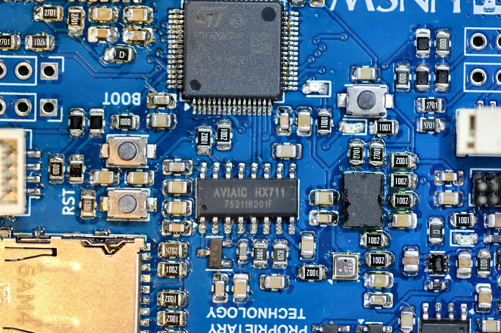

Andrew Chung
Electrical engineering and embedded hardware.
I study electrical engineering at UNSW and work as an Electronics Engineer Trainee at Switchmode Power Supplies. I build PCBs for aircraft telemetry, radio and live transport displays, and write robot software for rUNSWift.

Interactive hardware map
Trace a signal
Pick a route through a board and follow the same building blocks that turn up across my projects: serial, radio, positioning and power.
USB / PROGRAMMING
Move the probe or choose a route
PATH / 01
USB programming
USB-C → CH340K → ESP32-S3
The serial interface handles programming and reset without needing a separate adapter.
Open Framework ESP32 Card